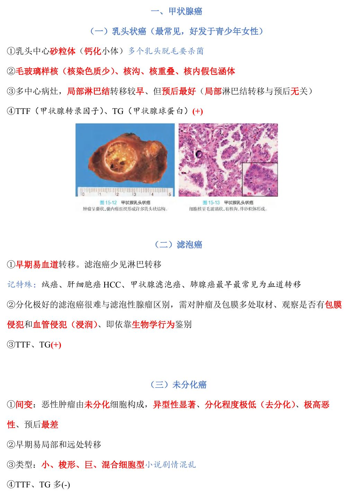
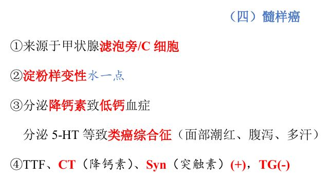
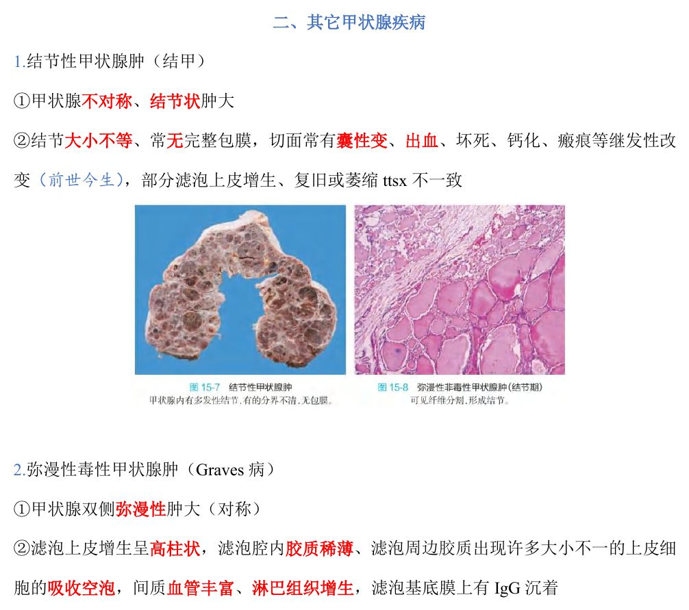
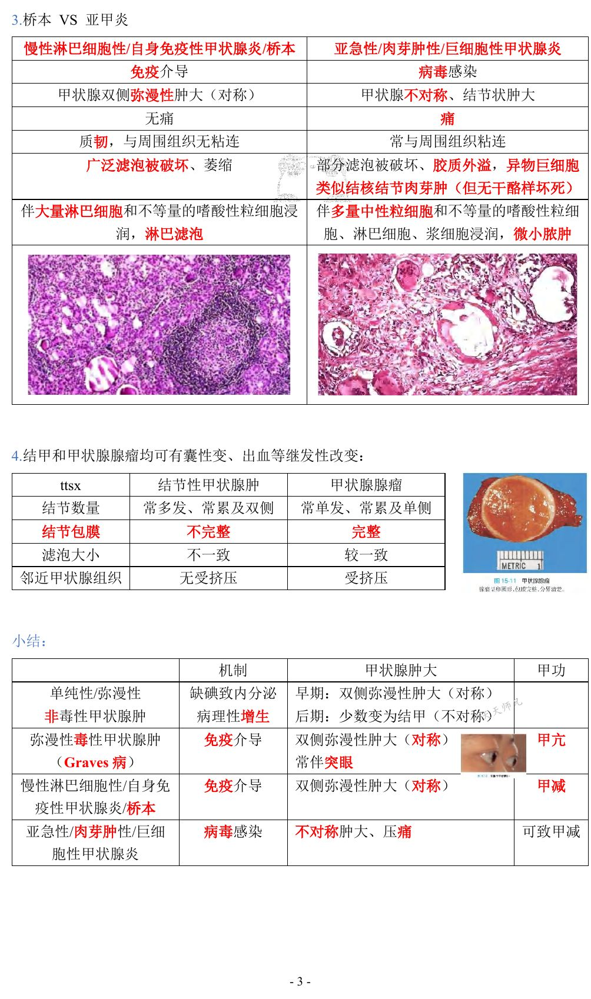
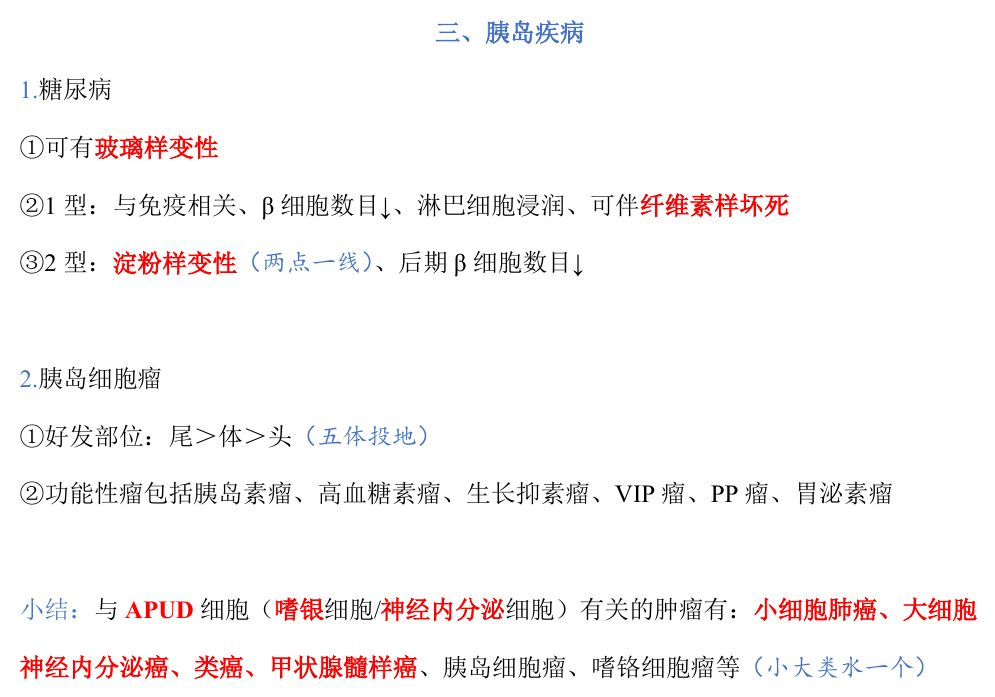
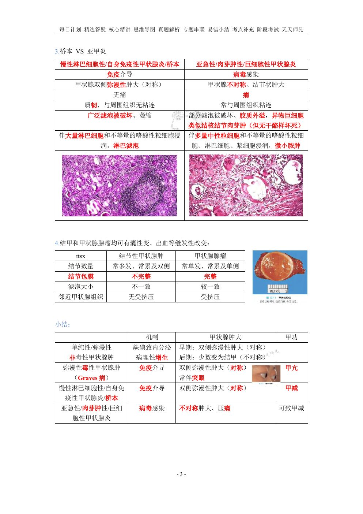
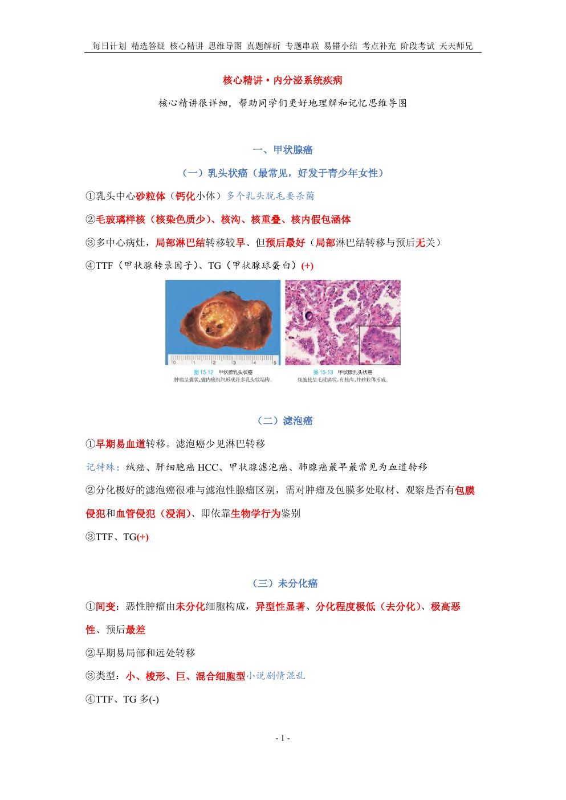
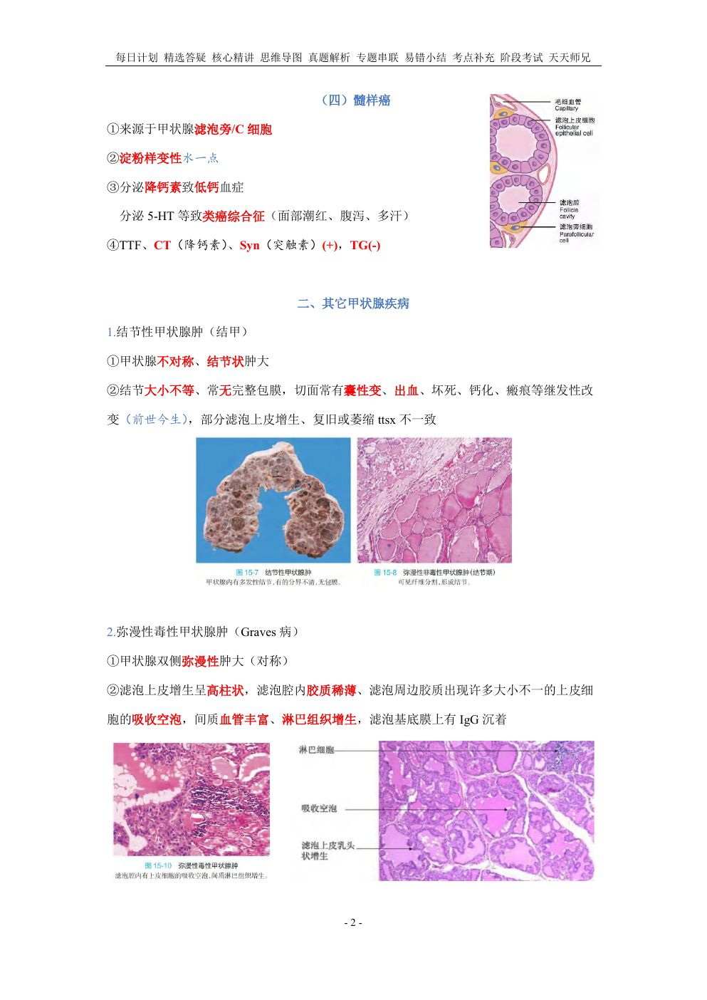
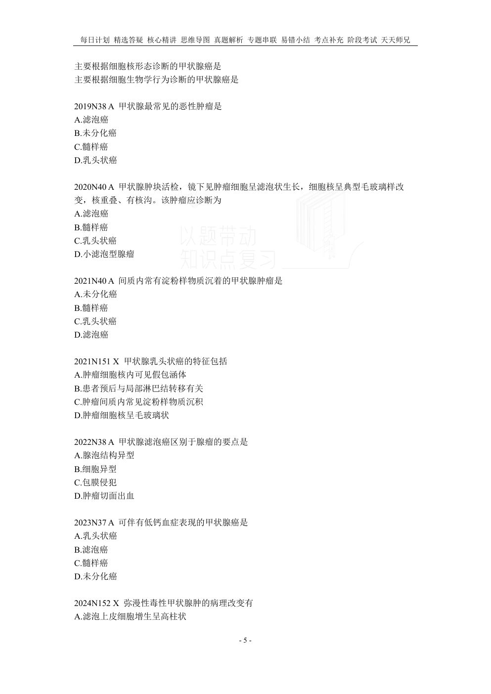
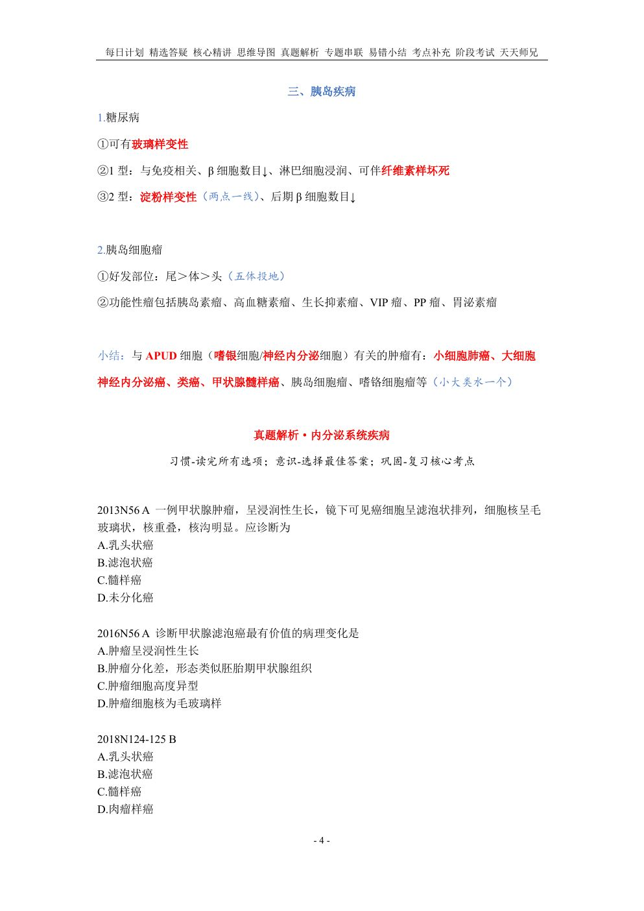

用法：A型题点选项即判；X型题先多选、再点【判卷】；答完自动展开解析。刷完本课再过一遍底部【本课速记卡】，效果最好。
一、甲状腺癌11 题
A型·单选Q1P1 · 甲状腺癌
甲状腺最常见的恶性肿瘤是
答案与解析
答案：A
乳头状癌最常见，好发于青少年女性。
📖 讲义定位：P1 · 甲状腺癌

📷 讲义原图 · P1 · 甲状腺癌
A型·单选Q2P1 · 甲状腺癌
主要根据细胞核形态诊断的甲状腺癌是
答案与解析
答案：B
乳头状癌核特征：毛玻璃样核（核染色质少）、核沟、核重叠、核内假包涵体。
📖 讲义定位：P1 · 甲状腺癌
A型·单选Q3P1 · 甲状腺癌
甲状腺乳头状癌的砂粒体位于
答案与解析
答案：D
砂粒体＝乳头中心的钙化小体。
📖 讲义定位：P1 · 甲状腺癌
A型·单选Q4P1 · 甲状腺癌
关于甲状腺乳头状癌的预后，正确的是
答案与解析
答案：C
多中心病灶，局部淋巴结转移较早、但预后最好（局部淋巴结转移与预后无关）。
📖 讲义定位：P1 · 甲状腺癌
A型·单选Q5P1 · 甲状腺癌
甲状腺滤泡癌区别于滤泡性腺瘤的要点是
答案与解析
答案：B
分化极好的滤泡癌很难与腺瘤区别——需对肿瘤及包膜多处取材，观察是否有包膜侵犯和血管侵犯（浸润），即依靠生物学行为鉴别。
📖 讲义定位：P1 · 甲状腺癌
A型·单选Q6P1 · 甲状腺癌
早期易发生血道转移的甲状腺癌是
答案与解析
答案：A
滤泡癌早期易血道转移、少见淋巴转移（与绒癌、肝细胞癌、肺腺癌同属『最早最常见为血道转移』的特殊肿瘤）。
📖 讲义定位：P1 · 甲状腺癌
A型·单选Q7P2 · 甲状腺癌
甲状腺髓样癌来源于
答案与解析
答案：C
髓样癌来源于甲状腺滤泡旁/A 细胞。
📖 讲义定位：P2 · 甲状腺癌

📷 讲义原图 · P2 · 甲状腺癌
A型·单选Q8P2 · 甲状腺癌
间质内常有淀粉样物质沉着的甲状腺肿瘤是
答案与解析
答案：D
髓样癌常有淀粉样变性。
📖 讲义定位：P2 · 甲状腺癌
A型·单选Q9P2 · 甲状腺癌
可伴有低钙血症表现的甲状腺癌是
答案与解析
答案：D
髓样癌分泌降钙素→低钙血症；分泌 5-HT 等→类癌综合征（面部潮红、腹泻、多汗）。
📖 讲义定位：P2 · 甲状腺癌
A型·单选Q10P1 · 甲状腺癌
甲状腺癌中恶性度最高、预后最差的是
答案与解析
答案：C
未分化癌：间变（去分化）、异型性显著、极高恶性、预后最差；早期易局部和远处转移；分小、梭形、巨、混合细胞型。
📖 讲义定位：P1 · 甲状腺癌
X型·多选Q11P1 · 甲状腺癌
甲状腺乳头状癌的特征包括
答案与解析
答案：AC
D 错：乳头状癌局部淋巴结转移与预后无关；B 错：淀粉样物质沉着见于髓样癌。
📖 讲义定位：P1 · 甲状腺癌
二、其它甲状腺疾病13 题
X型·多选Q12P2 · 结甲
结节性甲状腺肿的病理学特点有
答案与解析
答案：ABC
D 错：结甲结节常无完整包膜（完整包膜是腺瘤的特点）；继发改变包括囊性变、出血、坏死、钙化、瘢痕。
📖 讲义定位：P2 · 结甲

📷 讲义原图 · P2 · 结甲
X型·多选Q13P2 · Graves 病
弥漫性毒性甲状腺肿（Graves 病）的病理改变有
答案与解析
答案：ACD
B 错：毛玻璃样核是甲状腺乳头状癌的核特征；Graves 还有滤泡腔内胶质稀薄、滤泡基底膜上有 IgG 沉着。
📖 讲义定位：P2 · Graves 病
A型·单选Q14P2 · Graves 病
Graves 病的发病机制是
答案与解析
答案：A
免疫介导；双侧弥漫性肿大（对称）、甲亢、常伴突眼。
📖 讲义定位：P2 · Graves 病
A型·单选Q15P3 · 桥本
桥本甲状腺炎的本质是
答案与解析
答案：B
慢性淋巴细胞性/自身免疫性甲状腺炎（桥本）：免疫介导；甲减。
📖 讲义定位：P3 · 桥本

📷 讲义原图 · P3 · 桥本
A型·单选Q16P3 · 桥本
关于桥本甲状腺炎，下列叙述正确的是
答案与解析
答案：B
桥本：对称、无痛、质韧、无粘连；镜下广泛滤泡被破坏、萎缩，伴大量淋巴细胞和不等量嗜酸性粒细胞浸润、淋巴滤泡形成。
📖 讲义定位：P3 · 桥本
A型·单选Q17P3 · 亚甲炎
亚急性甲状腺炎的病变特点是
答案与解析
答案：D
亚甲炎（病毒所致）：部分滤泡被破坏、胶质外溢，异物巨细胞、类似结核结节肉芽肿（但无干酪样坏死）；伴多量中性粒细胞、嗜酸性粒细胞、淋巴细胞、浆细胞浸润及微小脓肿。
📖 讲义定位：P3 · 亚甲炎
配伍题 · 共用选项，每题选一个
A. 桥本甲状腺炎
B. 亚急性甲状腺炎
C. 两者均有
D. 两者均无
Q18P3 · 对比
免疫介导所致
答案与解析
答案：A
桥本＝免疫介导；亚甲炎＝病毒感染。
📖 讲义定位：P3 · 对比
Q19P3 · 对比
甲状腺不对称、结节状肿大伴压痛
答案与解析
答案：B
亚甲炎：不对称、结节状、有压痛、常与周围组织粘连。
📖 讲义定位：P3 · 对比
Q20P3 · 对比
广泛滤泡被破坏、萎缩
答案与解析
答案：A
桥本：广泛滤泡被破坏、萎缩；亚甲炎仅部分滤泡被破坏。
📖 讲义定位：P3 · 对比
Q21P3 · 对比
可见异物巨细胞和肉芽肿样结构
答案与解析
答案：B
亚甲炎：胶质外溢→异物巨细胞、类似结核结节肉芽肿（无干酪样坏死）。
📖 讲义定位：P3 · 对比
Q22P3 · 对比
伴大量淋巴细胞浸润和淋巴滤泡形成
答案与解析
答案：A
桥本：大量淋巴细胞和不等量嗜酸性粒细胞浸润、淋巴滤泡。
📖 讲义定位：P3 · 对比
Q23P3 · 对比
可伴有微小脓肿
答案与解析
答案：B
亚甲炎伴多量中性粒细胞浸润、微小脓肿。
📖 讲义定位：P3 · 对比
A型·单选Q24P3 · 结甲 VS 腺瘤
关于甲状腺腺瘤与结节性甲状腺肿的鉴别，正确的是
答案与解析
答案：A
对比：结甲＝多发/常双侧、包膜不完整、滤泡大小不一致、无受挤压；腺瘤＝单发/常单侧、包膜完整、滤泡较一致、邻近组织受挤压。
📖 讲义定位：P3 · 结甲 VS 腺瘤
三、胰岛疾病3 题
A型·单选Q25P4 · 胰岛
胰岛细胞瘤的好发部位是
答案与解析
答案：C
好发部位：尾＞体＞头（『五体投地』）；功能性瘤包括胰岛素瘤、高血糖素瘤、生长抑素瘤、VIP 瘤、PP 瘤、胃泌素瘤。
📖 讲义定位：P4 · 胰岛

📷 讲义原图 · P4 · 胰岛
A型·单选Q26P4 · 糖尿病
1 型糖尿病的胰岛病变特点是
答案与解析
答案：B
1 型：与免疫相关、β 细胞数目↓、淋巴细胞浸润、可伴纤维素样坏死；2 型：淀粉样变性（『两点一线』）、后期 β 细胞数目↓。
📖 讲义定位：P4 · 糖尿病
X型·多选Q27P4 · 小结
与 APUD 细胞（神经内分泌细胞）有关的肿瘤有
答案与解析
答案：ABD
C 错：肺鳞癌不是神经内分泌肿瘤。APUD 相关还有大细胞神经内分泌癌、类癌、嗜铬细胞瘤等。
📖 讲义定位：P4 · 小结
本课速记卡
甲状腺癌 4 型
| 类型 | 要点 |
|---|
| 乳头状癌（最常见） | 青少年女性；砂粒体（乳头中心）；毛玻璃核/核沟/核重叠/假包涵体；多中心；淋巴结转移早但预后最好；TTF/TG(+) |
| 滤泡癌 | 早期易血道转移；与腺瘤鉴别靠包膜/血管侵犯（生物学行为）；TTF/TG(+) |
| 未分化癌 | 间变、极高恶性、预后最差；小/梭形/巨/混合细胞型；TTF/TG 多(-) |
| 髓样癌 | 滤泡旁 C 细胞；淀粉样变；降钙素→低钙血症；5-HT→类癌综合征；CT/Syn(+)、TG(-) |
甲状腺肿与甲状腺炎
- 单纯性非毒性甲状腺肿：缺碘；早期双侧对称→后期少数变为结甲（不对称）
- 结甲：不对称、结节无完整包膜、继发改变（出血坏死囊性变钙化）、滤泡上皮增生/复旧/萎缩不一致
- Graves：免疫介导、对称、甲亢（常伴突眼）；高柱状上皮、胶质稀薄＋吸收空泡、淋巴组织增生、基底膜 IgG
- 桥本：免疫介导、对称、无痛、质韧无粘连；广泛滤泡破坏、淋巴滤泡
- 亚甲炎：病毒、不对称、压痛、粘连；肉芽肿样（无干酪样坏死）、微小脓肿
结甲 VS 腺瘤
| 项目 | 结节性甲状腺肿 | 甲状腺腺瘤 |
|---|
| 结节数量 | 多发、常累及双侧 | 单发、常单侧 |
| 结节包膜 | 不完整 | 完整 |
| 滤泡大小 | 不一致 | 较一致 |
| 邻近甲状腺组织 | 无受挤压 | 受挤压 |
胰岛与 APUD
- 糖尿病：玻璃样变；1 型（免疫、β↓、淋巴浸润、纤维素样坏死）；2 型（淀粉样变）
- 胰岛细胞瘤：尾＞体＞头；功能性瘤系列
- APUD 相关肿瘤：小细胞肺癌、大细胞神经内分泌癌、类癌、甲状腺髓样癌、胰岛细胞瘤、嗜铬细胞瘤
📚 网站题库（导入）9 组 · 18 题
说明：本部分为外部题库导入（来源：「西综题库」网站 · 病理学），题干、选项与答案保留原样；标注「教师补充」的答案未经讲义逐项复核。做题方式：点字母选择（多选后点【判卷】；答案可点开「答案与出处」查看）。
常见甲状腺炎B型题
A 免疫介导
B 甲状腺不对称、结节状肿大
C 痛
D 常与周围组织粘连
E 病毒感染
F 广泛滤泡被破坏、萎缩
G 部分滤泡被破坏、胶质外溢
H 淋巴滤泡
I 异物巨细胞
J 无痛
K 类似结核结节肉芽肿（但无干酪样坏死）
L 甲状腺双侧弥漫性肿大（对称）
M 伴大量淋巴细胞和不等量的嗜酸性粒细胞浸润
N 质韧，与周围组织无粘连
O 伴多量中性粒细胞和不等量的嗜酸性粒细胞、淋巴细胞、浆细胞浸润，微小脓肿
网站题W1第16讲 · 第3页
慢性淋巴细胞性/自身免疫性甲状腺炎/桥本
答案与出处
答案：AFHJLMN
📖 第16讲 · 第3页

📷 讲义原图 · 第16讲 · 第3页
网站题W2第16讲 · 第3页
亚急性/肉芽肿性/巨细胞性甲状腺炎
答案与出处
结节性甲状腺肿与甲状腺腺瘤B型题
A 常多发、常累及双侧
B 结节包膜完整
C 滤泡大小不一致
D 邻近甲状腺组织受挤压
E 常单发、常累及单侧
F 结节包膜不完整
G 滤泡大小较一致
H 邻近甲状腺组织无受挤压
I 囊性变、出血等继发性改变
网站题W3第16讲 · 第3页
结节性甲状腺肿
答案与出处
网站题W4第16讲 · 第3页
甲状腺腺瘤
答案与出处
常见甲状腺疾病的病因与形态B型题
A 缺碘致内分泌病理性增生
B 双侧弥漫性肿大（对称）
C 甲减
D 免疫介导
E 常伴突眼
F 甲亢
G 病毒感染
H 不对称肿大、压痛
I 早期无甲减，但是可致甲减
J 早期：双侧弥漫性肿大（对称）
K 后期：少数变为结节性甲状腺肿（不对称）
网站题W5第16讲 · 第3页
单纯性/弥漫性非毒性甲状腺肿
答案与出处
网站题W6第16讲 · 第3页
弥漫性毒性甲状腺肿（Graves病）
答案与出处
网站题W7第16讲 · 第3页
慢性淋巴细胞性/自身免疫性甲状腺炎/桥本
答案与出处
网站题W8第16讲 · 第3页
亚急性/肉芽肿性/巨细胞性甲状腺炎
答案与出处
乳头状癌B型题
A 乳头中心砂粒体（钙化小体）
B 早期易血道转移
C 由未分化细胞构成，异型性显著、恶性度极高、预后最差
D 来源于甲状腺滤泡旁/C细胞
E 毛玻璃样核
F 依靠生物学行为鉴别
G 核沟、核重叠、核内假包涵体
H 淀粉样变性
I 早期易局部和远处转移
J 包膜侵犯和血管侵犯
K 分泌降钙素和5-HT等
L 多中心病灶，局部淋巴结转移早但预后最好
M 小细胞、梭形细胞、巨细胞、混合细胞型
N TTF（+）
O TTF（-）
P TG（+）
Q TG（-）
R CT（+）
S Syn（+）
T 最常见，好发于青少年女性
网站题W9第16讲 · 第1页
乳头状癌
答案与出处
答案：AEGLNPT
📖 第16讲 · 第1页

📷 讲义原图 · 第16讲 · 第1页
网站题W10第16讲 · 第1页
滤泡状癌
答案与出处
网站题W11第16讲 · 第1页
未分化癌
答案与出处
网站题W12第16讲 · 第2页
髓样癌
答案与出处
答案：DHKNQRS
📖 第16讲 · 第2页

📷 讲义原图 · 第16讲 · 第2页
结节性甲状腺肿B型题
A 甲状腺不对称、结节状肿大
B 甲状腺双侧弥漫性肿大（对称）
C 结节大小不等、常无完整包膜
D 滤泡上皮增生呈高柱状
E 切面常有囊性变、出血、坏死、钙化、瘢痕等继发改变
F 滤泡腔内胶质稀薄，周边胶质有吸收空泡
G 部分滤泡上皮增生、复旧或萎缩不一致
H 间质血管丰富、淋巴组织增生
I 基底膜上有IgG沉着
网站题W13第16讲 · 第2页
结节性甲状腺肿
答案与出处
网站题W14第16讲 · 第2页
弥漫性毒性甲状腺肿（Graves病）
答案与出处
可引起严重腹泻的甲状腺癌是单项选择教师补充
网站题W15第16讲 · 第5页
可引起严重腹泻的甲状腺癌是(单选)
答案与出处
答案：C
📖 第16讲 · 第5页

📷 讲义原图 · 第16讲 · 第5页
甲状腺乳头状癌的特点有多项选择教师补充
A 青少年女性较多见
B 肿瘤生长缓慢,局部淋巴结转移较早
C 癌细胞核染色质少,无核仁,核相互重叠
D 检测BRAF基因变异有助于风险分层、评估预后
网站题W16第16讲 · 第5页
甲状腺乳头状癌的特点有(多选)
答案与出处
甲状腺髓样癌免疫组织化学染色常为阳性的有多项选择教师补充
网站题W17第16讲 · 第4页
甲状腺髓样癌免疫组织化学染色常为阳性的有(多选)
答案与出处
答案：ABC
📖 第16讲 · 第4页

📷 讲义原图 · 第16讲 · 第4页
弥漫性非毒性甲状腺肿胶质贮积期的主要病理变化为单项选择教师补充
A 滤泡上皮立方状增生
B 滤泡上皮低柱状增生
C 滤泡上皮高柱状增生
D 滤泡腔高度扩大
网站题W18第16讲 · 第3页
弥漫性非毒性甲状腺肿胶质贮积期的主要病理变化为(单选)
答案与出处